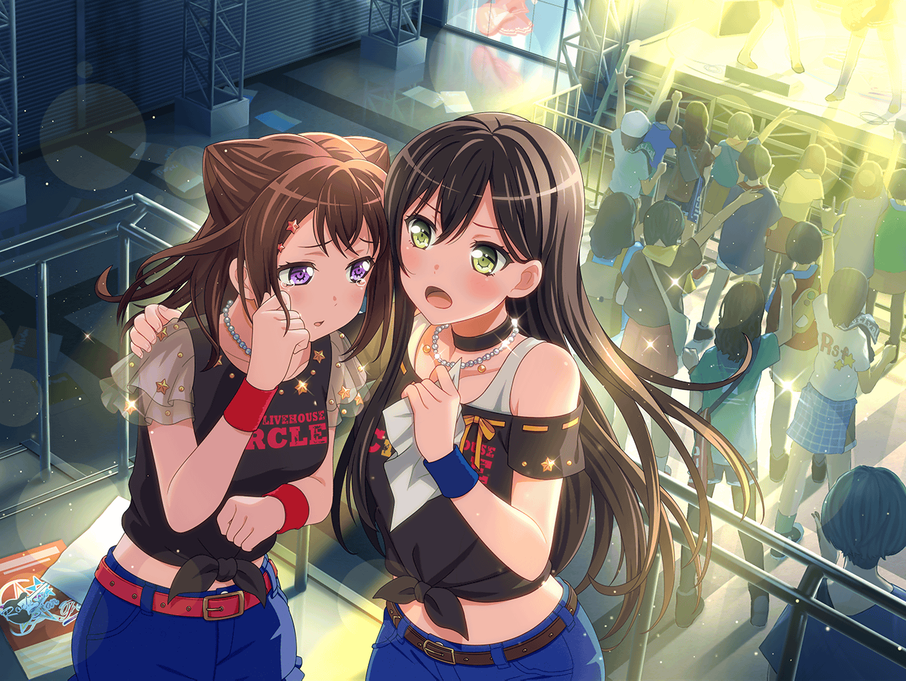

CiRCLE前 カフェ
まりな
今日はありがとうね！
みんなに手伝ってもらっちゃってホントに助かっちゃった！
たえ
いえ、ずっと出たいと思ってたイベントだったから、
ホントはもっとお手伝いしたいくらい
まりな
りみちゃんもごめんね。
最後まで付き合わせちゃって
りみ
わ、私も、全然大丈夫ですよ。
いつもお世話になってるCiRCLEのためですから！
まりな
そう言ってもらえると、本当に嬉しいな
まりな
けどさ、今日も聴かせてもらったけど、
イベント用の新曲、いい感じで仕上がってきてるよね？
たえ
みんなすっごい気合い入ってますから。
香澄なんてこの前、休憩時間中も寝言で歌ってました
まりな
あ、あんまり無理しないように言っておいてね……
りみ
けど、そう言うおたえちゃんだって、
いつも練習の時は汗びっしょりになるくらいやってるよね？
たえ
だって、イベントがすっごく楽しみだから。
あのステージの上でギターが弾けるって……
なんていうか……ウソみたい
まりな
わかるなー、その気持ち。
私もあそこで思いっきりギターを弾いてみたいって思うもん
りみ
そういえば、さっきもちょっと聞きましたけど、
まりなさんってギターやってたんですもんね？
まりな
まあ、一応……ね？
たえ
私は、まりなさんがギターをやってるの、
前から知ってましたよ？
りみ
そうだったんだ、おたえちゃん
まりな
……やっぱり？
もしかしたら、
たえちゃんはわかってるかな、って思ってたんだ
りみ
どうしてですか？
まりな
たえちゃん、よく私の左手を見てたから
りみ
……左手？
……あ！ そっか
たえ
まりなさんの左手の指先は、ギターをやってる人の
指先だったから。
皮が厚くなって、固くなってる
りみ
そっか……
私もベースを弾くからわかるな……
確かにそう言われればそうだね
たえ
まりなさんって……たぶん、ギターすっごいうまいと思う
まりな
いやいや……私なんて全然だよ。
それに最近はギターを弾く機会が前ほどなくなっちゃったから、
指先もちょっとだけ柔らかくなってきちゃったし
まりな
だからたまに弾いたりすると、すっごい痛いの
たえ
私もギターを始めたばかりの頃は、結構痛かったな
りみ
あ、私も！
弦の跡が、何本も残っちゃったりして……
まりな
そのうち手首まで痛くなってくるしね。
痛い思いまでしてなんでギターやってるんだろ？ って
思ったりしてね？
りみ
それ、私もわかります。
ベースもその辺、同じ感じなので……
まりな
ふふ……
なーんか、本当に懐かしいなー
たえ
ですね
まりな
あのさぁ、たえちゃんに１つ質問してもいい？
たえ
はい、なんでも聞いてください
まりな
たえちゃんは、なんでギターが好きなの？
ギターが好きな理由は？
りみ
あ、それは私もちょっと聞いてみたい！
たえ
なんでギターが好きか……？
あんまり深く考えたことないかも……
たえ
ギターを始めたばかりの頃は、
ちょっとずつうまくなっていくのが自分でもよくわかったから……
だから楽しくて好きでしたね
まりな
確かに最初は、やればやるだけうまくなるもんね。
それまで押さえられなかったコードが
すんなり押さえられた時とか、ホントに嬉しかったもん
たえ
特にFのコードがすんなり押さえられるようになった時、
感動しませんでした？
まりな
感動した！
人差し指で全部のフレット押さえるから、
あれって慣れないとむずかしいんだよね～！
りみ
私の友達も、Fが押さえられなくて、
途中で何人か、ギターを挫折しちゃいました……
まりな
ギターの最初の壁って感じだもんね、Fは
たえ
あと、私はキレイにアルペジオが
できるようになった時も、かなり嬉しかったな
まりな
それ、私も！
りみ
……ふふ
まりな
ど、どうしたの、りみちゃん？
私、おかしなこと、言っちゃったかな？
りみ
い、いえ……
なんかまりなさん、すっごく楽しそうだから、
本当にギターが好きなんだな、って思って……
まりな
そ、そんな改めて言われると、なんか照れくさいな……
たえ
まりなさん、そんなことで照れなくていいと思います。
だって私、ギター大好きですもん。
ギターって、それくらい魅力ある楽器ですもん
まりな
たえちゃん……
たえ
今の私が、ギターを好きな理由は……
たぶん……
たえ
ギターを弾いてると、音と自分が重なる感じがするからかな？
たえ
自分が音になって……
音が自分になってる感じがするから……
だと思います
まりな
自分が音になって……音が自分になる……
まりな
何ていうか……たえちゃんならではの独特の表現だね？
けど、その感じなんかよくわかるかも……
うん……すっごくわかる……
まりな
なーんか今日は……っ。
久しぶりにギターでも弾いちゃおうかなっ！？
たえ
いいですね！
良かったら今度、セッションしましょうね
りみ
わ、私も入れて欲しいっ！
まりな
う、うん！ ホントに、お願いね！
それじゃあ、それまでに昔の勘、取り戻しておかなきゃなー
たえ
ふふっ。
まりなさんとのセッション、楽しみにしてますね